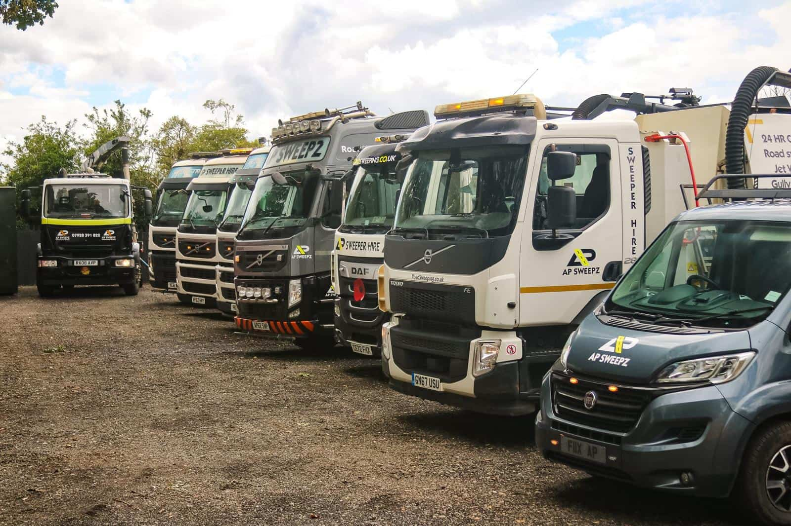
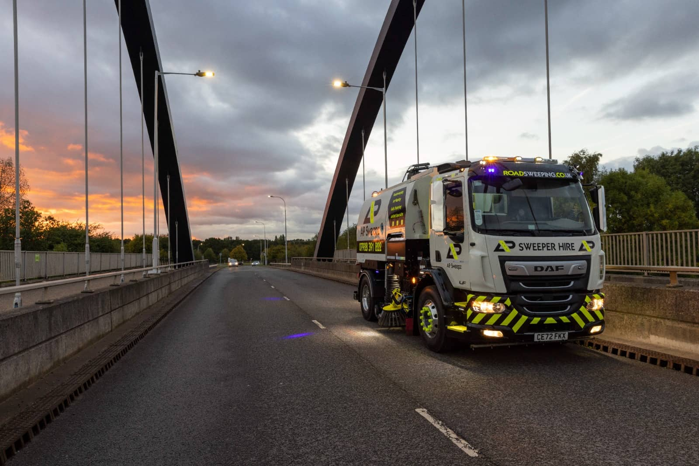

Professional Road
Sweeper Hire
Unbeatable rates. Reliable service. Covering the West Midlands and beyond with industrial-grade road sweeping, gully sucking, and specialist cleaning solutions.
Specialist Sweeping &
Cleaning Services
From construction sites to public highways, we deliver comprehensive cleaning solutions with our fleet of modern Johnston and Stocks sweepers.
Road Sweeping
Professional mechanical and vacuum sweeping for highways, residential streets, and industrial roads. Keeping your roads clean, safe, and compliant.
Gully Sucking
High-capacity gully emptying and drain maintenance to prevent flooding and maintain effective drainage systems across your site.
Jet Washing
High-pressure cleaning for pavements, forecourts, car parks, and building exteriors. Restoring surfaces to pristine condition.
Dust Suppression
Construction site dust control using water bowsers and specialist equipment. Maintaining air quality and site compliance.
Building Site Sweeps
Complete construction site cleaning including wheel washing, road cleanup, and debris removal to keep sites safe and compliant.
24hr Flood Response
Emergency rapid-response flood cleanup and water removal. Available around the clock when you need us most, anywhere in the UK.


Business
The Midlands' Most Trusted
Sweeping Partner
Based in Redditch, we've built our reputation on reliability, competitive pricing, and first-class service. Whether it's a one-off site clean or ongoing contract work, our experienced operators and modern fleet deliver results every time.
Operating from the West Midlands with full UK coverage for any project size.
All work carried out to the highest safety and environmental standards.
Affordable rates with specialist discounts for long-term and contract hire.
Modern Fleet,
Maximum Impact
Our fleet of Johnston and Stocks road sweepers are maintained to the highest standards, ensuring reliable performance on every job.
Let's Discuss
Your Project
Whether you need a one-off clean or ongoing sweeper hire, we're here to help. Reach out for a free quote tailored to your requirements.
Frequently Asked
Questions
What areas do AP Sweepz cover?
We're based in Redditch, West Midlands, and provide road sweeper hire services nationwide across the UK. We regularly serve Birmingham, Worcester, Bromsgrove, Solihull, Coventry, and surrounding areas, with the ability to deploy anywhere in England, Scotland, and Wales.
Do you offer 24-hour emergency road sweeping?
Yes, we offer a full 24/7 emergency response service. This includes flood cleanup, water removal, and urgent road sweeping anywhere in the UK. Call us on 07771 954836 for immediate assistance.
What road sweeping services do you provide?
We provide a comprehensive range of services: road sweeping, gully sucking, high-pressure jet washing, dust suppression, building site sweeps, car park cleaning, cesspit waste removal, septic tank waste removal, desilting, welfare unit waste removal, and 24-hour flood response.
How much does road sweeper hire cost?
We offer competitive and affordable rates tailored to your specific needs. We provide specialist discounts for long-term and contract hire. Contact us on 07771 954836 or email hire@apsweeperhire.co.uk for a free, no-obligation quote.
What types of sweepers do you operate?
Our modern fleet includes Johnston and Stocks road sweepers, maintained to the highest standards. We have a range of vehicles from compact sweepers for car parks and tight spaces through to heavy-duty machines for highways and large construction sites.
Do you work on construction sites?
Absolutely. Building site sweeps are one of our core services. We provide complete construction site cleaning including wheel washing, road cleanup, and debris removal to keep sites safe, compliant, and inspection-ready.